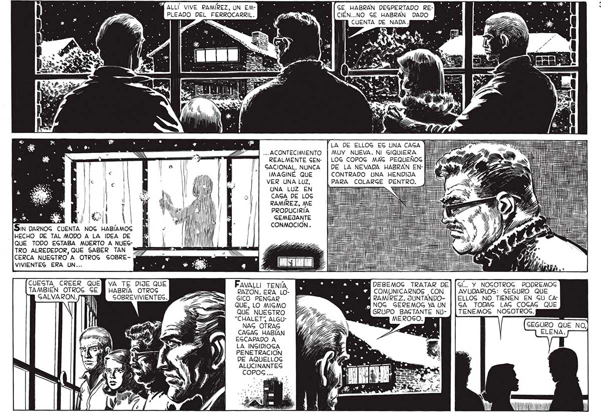

S AX ¿A so? E 3 E ES ñ Ñ Sin DARNOG CUENTA NOG HABÍAMOG HECHO DE TAL MODO A LA IDEA DE QUE TODO EGTABA MUERTO A NUEGTRO ALREDEDOR, QUE SABER TAN CERCA NUEGTRO A OTROG GOBREVIVIENTES ERA UN... TAMBIÉN OTROG GE HABRÍA OTROS Ni al » GOBREVIVIENTES. ll | ? Mb: MÍ ALLÍ VIVE RAMÍREZ, UN EMPLEADO DEL FERROCARRIL, ... ACONTECIMIENTO REALMENTE GEN: GACIONAL. NUNCA IMAGINÉ QUE VER UNA LUZ, UNA LUZ EN CAGA DE LOG RAMIREZ, ME PRODUCIRÍA GEMEJANTE CONMOCION . FAVALLI TENÍA, RAZON. ERA LOGICO. PENGAR QUE, LO MIGMO QUE NUESTRO “CHALETS ALGU" NAG OTRAS CAGAS HABÍAN EGCAPADO A LA INGIDIOGA PENETRACION DE AQUELLOG ALUCINANTEG GE HABRAN DEGPERTADO RECIÉN..NO GE HABRAN DADO CUENTA DE NADA. 'LA DE ELLOG EG UNA CAGA MUY NUEVA. NI SIQUIERA LOG COPOG MAG PEQUEÑOG [titi DE LA NEVADA HABRAN EN- E*! CONTRADO UNA HENDIJA E PARA COLARGE DENTRO. MDEBEMOG TRATAR DE COMUNICARNOS CON NOG_ GEREMOG YA ÚN GRUPO BAGTANTE NUUN MEROSO. Gl... Y NOGOTROG PODREMOS AYUDARLOS: SEGURO QUE ELLOG MO TIENEN EN GU CAGA TODAS LAS COGAS QUE TENEMOS NOSOTROS. GEGURO QUE NO, ELENA. 35
